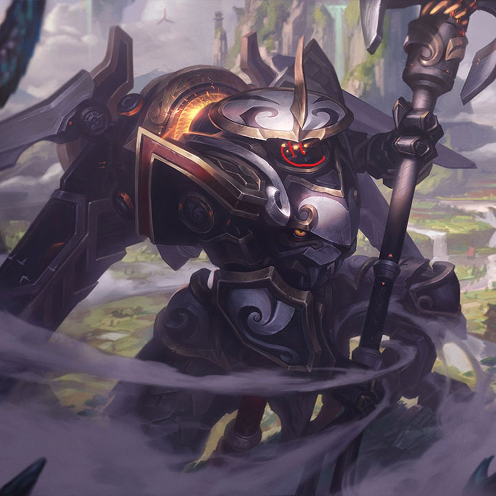

Hyperblog Hyperblog
Tu blog de confianza
Aquí inicia la historia de mi futuro y de grandes proyectos.
Y este es el párrafo de inicio donde vamos a explicar las cosas increíbles que se pueden hacer con ramas

Los blogs son la mejor forma de compartir informacion con tus ideas.Mucho mas que ir a conferencias o salir en youtube.Excepto si eres un rockstar.Pero estadisticamente no lo eres... por ahora.
Suscribete y dale like.
IsaacM.
este parrafo es para corroborar que hize un merge de footer a master